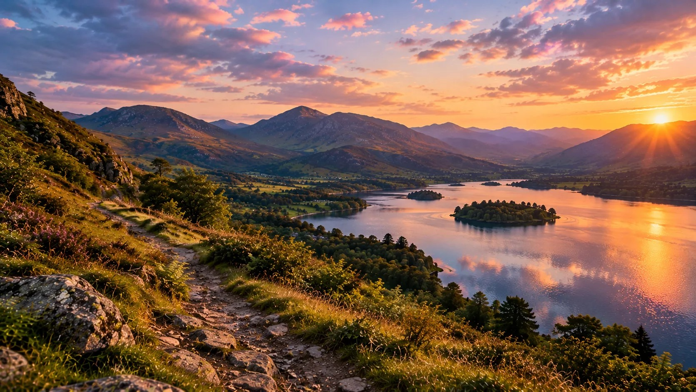
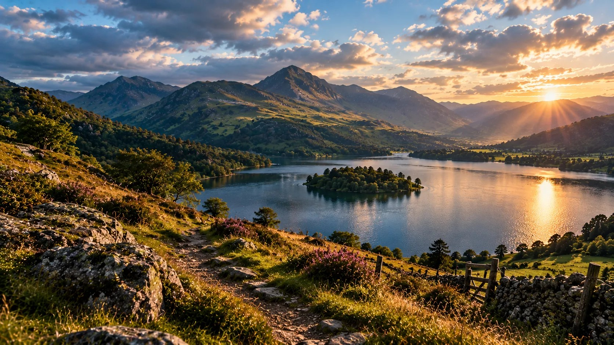
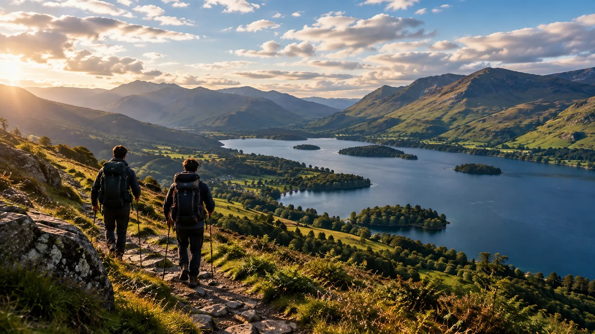
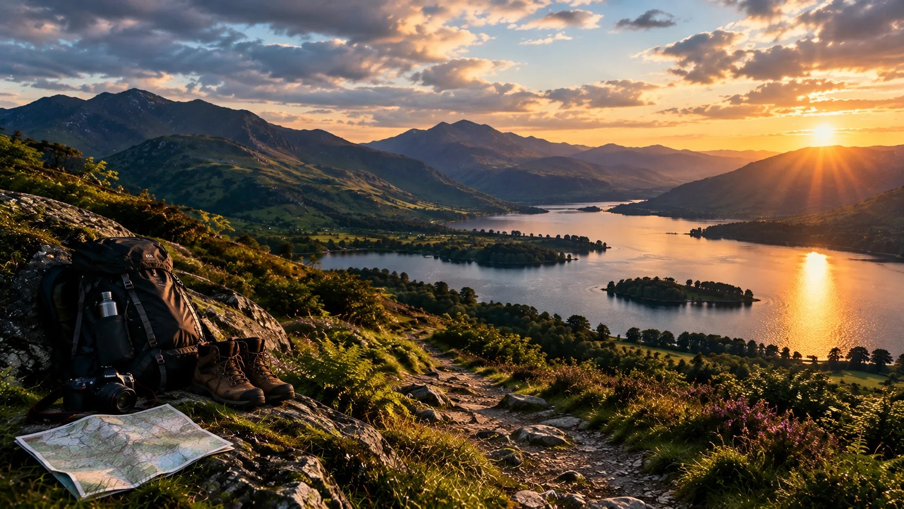
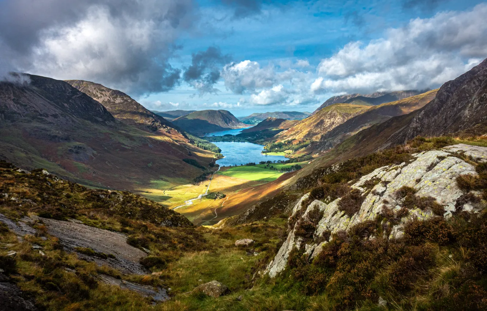
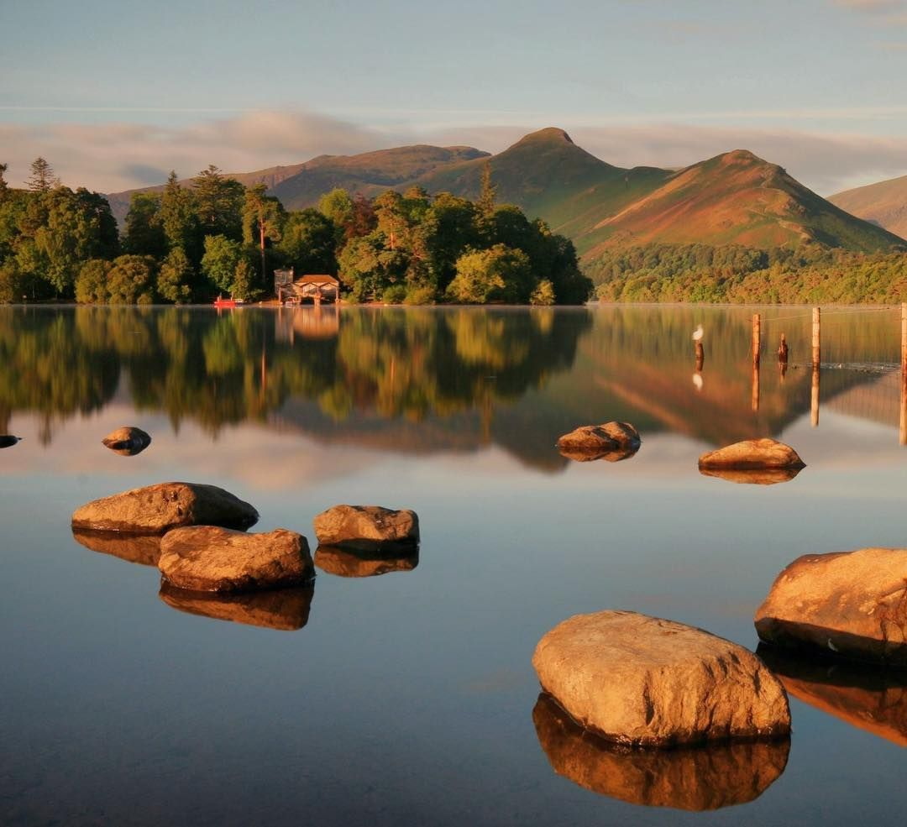
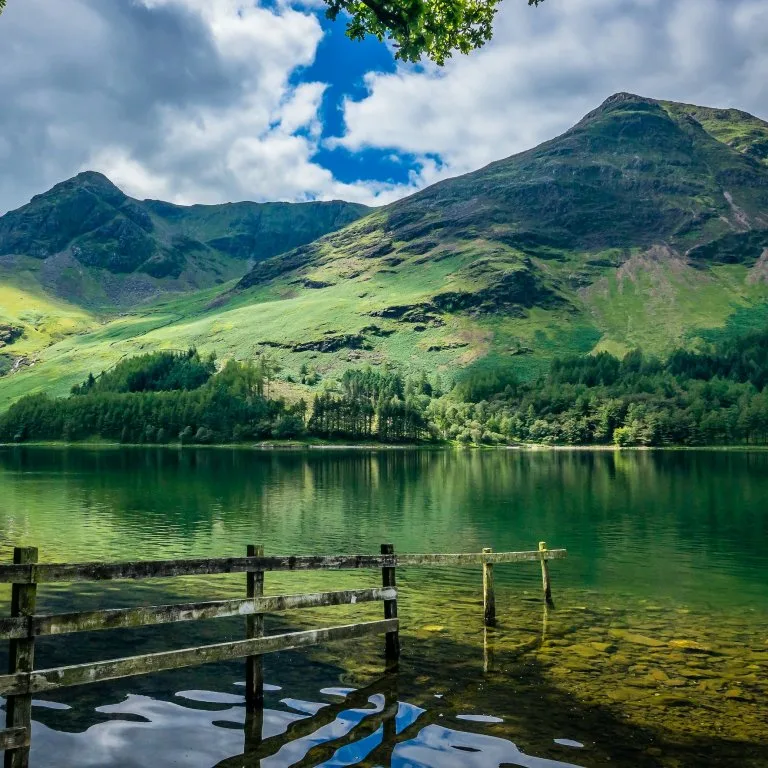
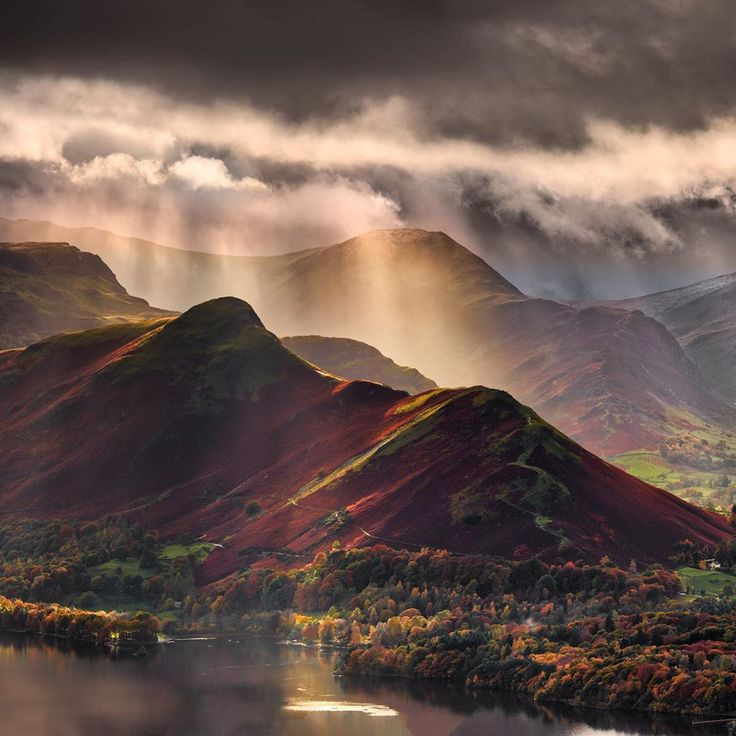
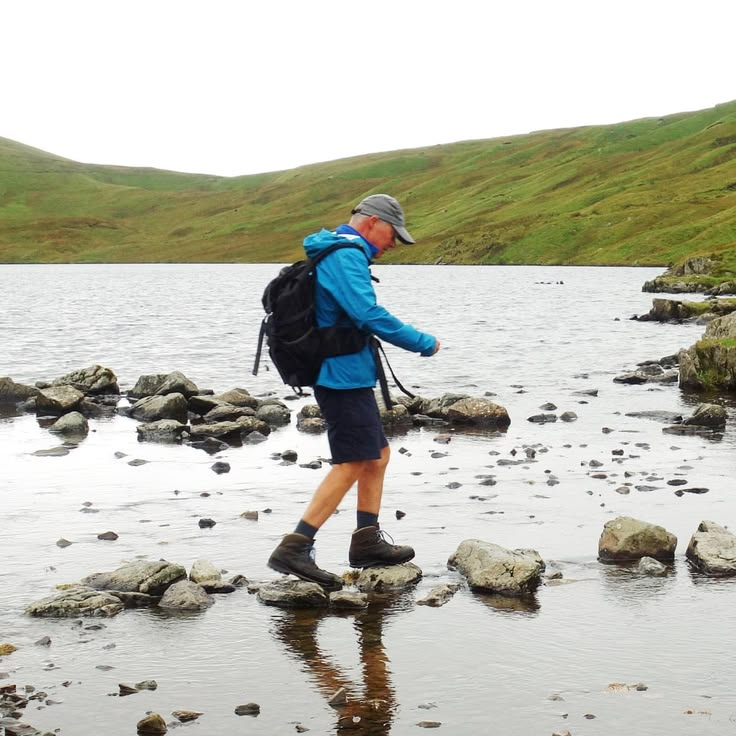
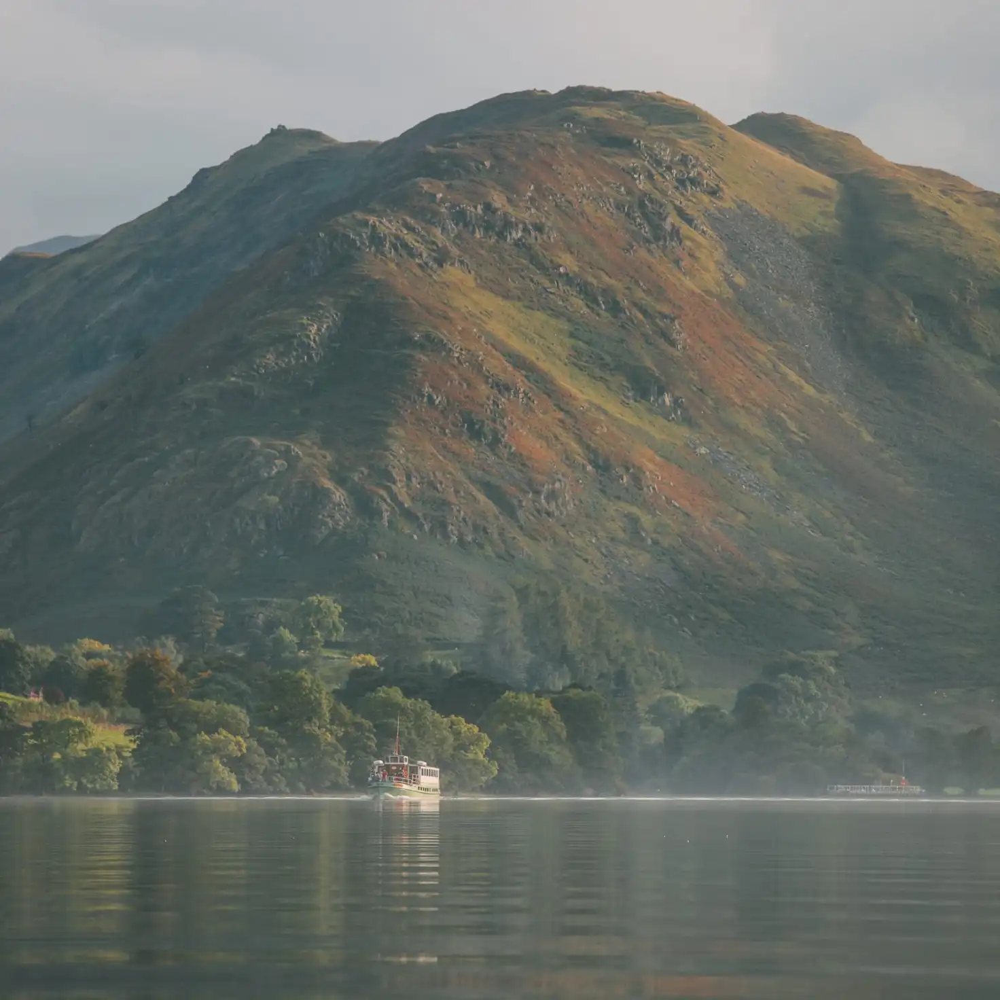

△
What's the landscape like?
The Lake District has high mountains, green valleys, beautiful lakes, rivers and forests. The scenery is peaceful and picturesque.

A JOURNEY INTO NATURE
NATURE, MOUNTAINS, LAKES
Discover one of the most beautiful
places in Britain.
01 / FIND YOUR ESCAPE
The Lake District is in Cumbria, in the north-west of England. It is close to the Scottish border and is one of the most beautiful natural areas in Britain.
Discover the landscape →
The Lake District has high mountains, green valleys, beautiful lakes, rivers and forests. The scenery is peaceful and picturesque.

Tourists can walk in the mountains, take photos, go boating and visit small villages. They can enjoy the views and explore the countryside.

Take comfortable shoes, a waterproof jacket, water, snacks and a camera. The weather can change quickly, so warm clothes are useful.

02 / DID YOU KNOW?
Scafell Pike is the highest mountain in England. It is located in the Lake District. Lake Windermere is the largest natural lake in England.

Scafell Pike — England's highest mountain03 / MAKE A DAY OF IT
A one-day plan
04 / TAKE A LOOK AROUND





05 / LEARN AS YOU GO
The Lake District
is waiting for you.